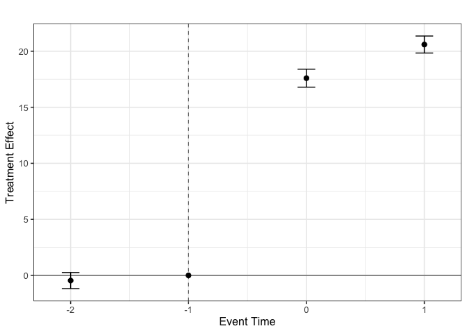

triplediff is an R package for computing average treatment effects in Triple Differences Designs (also known as Difference-in-Differences-in-Differences or DDD). DDD designs are widely used in empirical work to relax parallel trends assumptions in Difference-in-Differences settings. This package provides functions to estimate group-time average treatment effect and event-study type estimands associated with DDD designs. The setups allowed are:
- Two-periods or Multiple Periods DDD.
- Single Treatment Date and Variation in Treatment Timing (i.e., staggered adoption).
- Conditional and Unconditional DDD parallel trends assumptions.
The triplediff package implements the framework proposed in:
Installation
You can install the latest development version of triplediff from Github with:
# install.packages("devtools")
devtools::install_github("marcelortizv/triplediff")
library(triplediff)Quick Start: How to use triplediff
We provide a quick start example to illustrate the main features of the package. The UX is designed to be similar to the did package, so users familiar with it should feel comfortable using triplediff.
ddd is the main function for computing the DDD estimators proposed in Ortiz-Villavicencio and Sant’Anna (2025). At its core, ddd employs regression adjustment, inverse probability weighing, and doubly robust estimators that are valid under conditional DDD parallel trends.
To use ddd, the minimal data requirements include:
id: Unit unique identifier (e.g., firm, individual, etc.). Its column name is associated with parameteridname.period: Time identifier (e.g., year, month, etc.). Its column name is associated with parametertname.outcome: Outcome variable of interest. Its column name is associated with parameteryname.state: First period when treatment is enabled for a particular unit. It is a positive number for treated units and defines which group the unit belongs to. It takes value0orInffor never-enabling units. Its column name is associated with parametergname.partition: This is an indicator variable that is 1 for the units eligible for treatment and 0 otherwise. Its column name is associated with parameterpname.
The following are two simplified examples of how to use the ddd function. The first one is for a two-period DDD setup, while the second one is for a multiple-period DDD setup with staggered treatment adoption.
Case: Two-Periods DDD with covariates
First, we simulate some data with a built-in function gen_dgp_2periods that generates a two-period DDD setup with a single treatment date. This function receives the number of units and the type of DGP design to generate. The gen_dgp_2periods function returns a data frame with the required columns for the ddd function with 4 covariates.
set.seed(1234) # Set seed for reproducibility
# Simulate data for a two-periods DDD setup
df <- gen_dgp_2periods(
size = 500, # Number of units
dgp_type = 1 # Type of DGP design
)$data
head(df)
#> Key: <id>
#> id state partition time y cov1 cov2 cov3
#> <int> <num> <num> <int> <num> <num> <num> <num>
#> 1: 1 0 0 1 216.3097 -0.97080934 1.3995704 1.48834130
#> 2: 1 0 0 2 430.9374 -0.97080934 1.3995704 1.48834130
#> 3: 2 1 0 1 186.5831 0.02591115 -0.9747527 0.01714001
#> 4: 2 1 0 2 375.9393 0.02591115 -0.9747527 0.01714001
#> 5: 3 0 1 1 425.6606 0.97147321 0.3310760 -1.51021253
#> 6: 3 0 1 2 639.5013 0.97147321 0.3310760 -1.51021253
#> cov4 cluster
#> <num> <int>
#> 1: 0.3853346 15
#> 2: 0.3853346 15
#> 3: -0.7822000 41
#> 4: -0.7822000 41
#> 5: 0.2334469 5
#> 6: 0.2334469 5Now we can estimate the average treatment effect on the treated (ATT) using the ddd function.
# Estimate the average treatment effect on the treated, ATT(2,2)
att_22 <- ddd(yname = "y", tname = "time", idname = "id", gname = "state",
pname = "partition", xformla = ~cov1 + cov2 + cov3 + cov4,
data = df, control_group = "nevertreated", est_method = "dr")
summary(att_22)
#> Call:
#> ddd(yname = "y", tname = "time", idname = "id", gname = "state",
#> pname = "partition", xformla = ~cov1 + cov2 + cov3 + cov4,
#> data = df, control_group = "nevertreated", est_method = "dr")
#> =========================== DDD Summary ==============================
#> DR-DDD estimation for the ATT:
#> ATT Std. Error Pr(>|t|) [95% Ptwise. Conf. Band]
#> 0.0439 0.2626 0.8672 -0.4708 0.5586
#>
#> Note: * indicates that the confidence interval does not contain zero.
#> --------------------------- Data Info -----------------------------
#> Panel data
#> Outcome variable: y
#> Qualification variable: partition
#> No. of units at each subgroup:
#> treated-and-eligible: 131
#> treated-but-ineligible: 133
#> eligible-but-untreated: 116
#> untreated-and-ineligible: 120
#> --------------------------- Algorithms ------------------------------
#> Outcome Regression estimated using: OLS
#> Propensity score estimated using: Maximum Likelihood
#> --------------------------- Std. Errors ----------------------------
#> Level of significance: 0.05
#> Analytical standard errors.
#> Type of confidence band: Pointwise Confidence Interval
#> =====================================================================
#> See Ortiz-Villavicencio and Sant'Anna (2025) for details.We can also leverage the fact that our estimators are doubly robust to rely on data-driven models for estimating the nuisance parameters. For example, we can use a flexible machine learning like xgboost to estimate outcome models and ranger (Random Forest) to estimate the propensity scores. The engine behind this approach is the mlr3 package, which provides a unified interface for machine learning in R.
library(mlr3)
library(mlr3learners)
learner_rf <- lrn("classif.ranger", predict_type = "prob", num.trees = 100,
min.node.size = 1, importance = 'impurity')
learner_regr <- lrn("regr.xgboost")
learners <- list(ml_pa = learner_rf, ml_md = learner_regr)
att_22_dml <- ddd(yname = "y", tname = "time", idname = "id", gname = "state",
pname = "partition", xformla = ~cov1 + cov2 + cov3 + cov4,
data = df, control_group = "nevertreated",
est_method = "dml", learners = learners, n_folds = 3)
#> INFO [23:42:01.107] [mlr3] Applying learner 'classif.ranger' on task 'pscore_task' (iter 1/3)
#> INFO [23:42:01.170] [mlr3] Applying learner 'classif.ranger' on task 'pscore_task' (iter 2/3)
#> INFO [23:42:01.191] [mlr3] Applying learner 'classif.ranger' on task 'pscore_task' (iter 3/3)
#> INFO [23:42:01.266] [mlr3] Applying learner 'regr.xgboost' on task 'reg_task' (iter 1/3)
#> INFO [23:42:01.455] [mlr3] Applying learner 'regr.xgboost' on task 'reg_task' (iter 2/3)
#> INFO [23:42:01.521] [mlr3] Applying learner 'regr.xgboost' on task 'reg_task' (iter 3/3)
#> INFO [23:42:01.625] [mlr3] Applying learner 'classif.ranger' on task 'pscore_task' (iter 1/3)
#> INFO [23:42:01.642] [mlr3] Applying learner 'classif.ranger' on task 'pscore_task' (iter 2/3)
#> INFO [23:42:01.659] [mlr3] Applying learner 'classif.ranger' on task 'pscore_task' (iter 3/3)
#> INFO [23:42:01.682] [mlr3] Applying learner 'regr.xgboost' on task 'reg_task' (iter 1/3)
#> INFO [23:42:01.752] [mlr3] Applying learner 'regr.xgboost' on task 'reg_task' (iter 2/3)
#> INFO [23:42:01.824] [mlr3] Applying learner 'regr.xgboost' on task 'reg_task' (iter 3/3)
#> INFO [23:42:01.916] [mlr3] Applying learner 'classif.ranger' on task 'pscore_task' (iter 1/3)
#> INFO [23:42:01.933] [mlr3] Applying learner 'classif.ranger' on task 'pscore_task' (iter 2/3)
#> INFO [23:42:01.949] [mlr3] Applying learner 'classif.ranger' on task 'pscore_task' (iter 3/3)
#> INFO [23:42:01.971] [mlr3] Applying learner 'regr.xgboost' on task 'reg_task' (iter 1/3)
#> INFO [23:42:02.037] [mlr3] Applying learner 'regr.xgboost' on task 'reg_task' (iter 2/3)
#> INFO [23:42:02.102] [mlr3] Applying learner 'regr.xgboost' on task 'reg_task' (iter 3/3)
summary(att_22_dml)
#> Call:
#> ddd(yname = "y", tname = "time", idname = "id", gname = "state",
#> pname = "partition", xformla = ~cov1 + cov2 + cov3 + cov4,
#> data = df, control_group = "nevertreated", est_method = "dml",
#> learners = learners, n_folds = 3)
#> =========================== DDD Summary ==============================
#> DML-DDD estimation for the ATT:
#> ATT Std. Error Pr(>|t|) [95% Ptwise. Conf. Band]
#> -4.3046 2.4784 0.0824 -9.1621 0.5529
#>
#> Note: * indicates that the confidence interval does not contain zero.
#> --------------------------- Data Info -----------------------------
#> Panel data
#> Outcome variable: y
#> Qualification variable: partition
#> No. of units at each subgroup:
#> treated-and-eligible: 131
#> treated-but-ineligible: 133
#> eligible-but-untreated: 116
#> untreated-and-ineligible: 120
#> --------------------------- Algorithms ------------------------------
#> Outcome Regression estimated using: Random Forest
#> Propensity score estimated using: Extreme Gradient Boosting
#> -------------------------- Cross-fitting ---------------------------
#> No. of folds: 3
#> Apply cross-fitting: TRUE
#> --------------------------- Std. Errors ----------------------------
#> Level of significance: 0.05
#> Analytical standard errors.
#> Type of confidence band: Pointwise Confidence Interval
#> =====================================================================
#> See Ortiz-Villavicencio and Sant'Anna (2025) for details.Case: Multiple Periods DDD with staggered treatment adoption
In this case, we simulate some data with a built-in function gen_dgp_staggered that generates a multiple-period DDD setup with staggered treatment adoption. This function receives the number of units and the type of DGP design to generate. The gen_dgp_staggered function returns a data frame with the required columns for the ddd function with 4 covariates.
set.seed(1234) # Set seed for reproducibility
# Simulate data for a multiple-period DDD setup with staggered treatment adoption
data <- gen_dgp_mult_periods(size = 500, dgp_type = 1)$data
head(data)
#> Key: <id>
#> id state partition time y cov1 cov2 cov3
#> <int> <num> <num> <int> <num> <num> <num> <num>
#> 1: 1 3 1 1 1371.1923 -0.97080934 1.3995704 1.48834130
#> 2: 1 3 1 2 1690.9157 -0.97080934 1.3995704 1.48834130
#> 3: 1 3 1 3 2034.5661 -0.97080934 1.3995704 1.48834130
#> 4: 2 2 1 1 934.0812 0.02591115 -0.9747527 0.01714001
#> 5: 2 2 1 2 1189.5495 0.02591115 -0.9747527 0.01714001
#> 6: 2 2 1 3 1444.1072 0.02591115 -0.9747527 0.01714001
#> cov4 cluster
#> <num> <int>
#> 1: 0.3853346 27
#> 2: 0.3853346 27
#> 3: 0.3853346 27
#> 4: -0.7822000 45
#> 5: -0.7822000 45
#> 6: -0.7822000 45Now we can estimate the group-time average treatment effect on the treated using the ddd function.
# Estimate the group-time average treatment effect on the treated, ATT(g,t)
att_gt <- ddd(yname = "y", tname = "time", idname = "id", gname = "state",
pname = "partition", xformla = ~cov1 + cov2 + cov3 + cov4,
data = data, control_group = "nevertreated",
base_period = "universal", est_method = "dr")
summary(att_gt)
#> Call:
#> ddd(yname = "y", tname = "time", idname = "id", gname = "state",
#> pname = "partition", xformla = ~cov1 + cov2 + cov3 + cov4,
#> data = data, control_group = "nevertreated", base_period = "universal",
#> est_method = "dr")
#> =========================== DDD Summary ==============================
#> DR-DDD estimation for the ATT(g,t):
#> Group Time ATT(g,t) Std. Error [95% Pointwise Conf. Band]
#> 2 1 0.0000 NA NA NA
#> 2 2 10.4901 0.3613 9.7819 11.1983 *
#> 2 3 20.5986 0.3868 19.8405 21.3568 *
#> 3 1 -0.4593 0.3660 -1.1767 0.2580
#> 3 2 0.0000 NA NA NA
#> 3 3 24.5983 0.3333 23.9450 25.2515 *
#>
#> Note: * indicates that the confidence interval does not contain zero.
#> --------------------------- Data Info -----------------------------
#> Panel data
#> Outcome variable: y
#> Qualification variable: partition
#> Control group: Never Treated
#> No. of units per treatment group:
#> Units enabling treatment at period 3: 198
#> Units enabling treatment at period 2: 195
#> Units never enabling treatment: 107
#> --------------------------- Algorithms ------------------------------
#> Outcome Regression estimated using: OLS
#> Propensity score estimated using: Maximum Likelihood
#> --------------------------- Std. Errors ----------------------------
#> Level of significance: 0.05
#> Analytical standard errors.
#> Type of confidence band: Pointwise Confidence Interval
#> =====================================================================
#> See Ortiz-Villavicencio and Sant'Anna (2025) for details.Next, we can aggregate the group-time average treatment effect on the treated to obtain the event-study type estimates. The agg_ddd function allows us to aggregate the results from the ddd function.
es_e <- agg_ddd(att_gt, type = "eventstudy")
summary(es_e)
#> Call:
#> agg_ddd(ddd_obj = att_gt, type = "eventstudy")
#> ========================= DDD Aggregation ============================
#> Overall summary of ATT's based on event-study/dynamic aggregation:
#> ATT Std. Error [ 95% Conf. Int.]
#> 19.0983 0.3213 18.4685 19.7281 *
#>
#> Event Study:
#> Event time Estimate Std. Error [95% Ptwise. Conf. Band]
#> -2 -0.4593 0.3660 -1.1767 0.2580
#> -1 0.0000 NA NA NA
#> 0 17.5980 0.4095 16.7955 18.4005 *
#> 1 20.5986 0.3868 19.8405 21.3568 *
#>
#> Note: * indicates that the confidence interval does not contain zero.
#> --------------------------- Data Info -----------------------------
#> Outcome variable: y
#> Partition variable: partition
#> Control group: Never Treated
#> --------------------------- Std. Errors ----------------------------
#> Level of significance: 0.05
#> Analytical standard errors.
#> =====================================================================
#> See Ortiz-Villavicencio and Sant'Anna (2025) for details.From these event-study type estimates, we can plot the results using the ggplot library to create crisp visualizations.
es_df <- with(es_e$aggte_ddd, {
tibble::tibble(period = egt,
estimate = att.egt,
ci_lower = estimate - crit.val.egt * se.egt,
ci_upper = estimate + crit.val.egt * se.egt)
})
all_per <- sort(unique(es_df$period))
p <- ggplot(es_df, aes(period, estimate)) +
geom_errorbar(aes(ymin = ci_lower, ymax = ci_upper),
width = .15,
position = position_dodge(width = .3)) +
geom_point(size = 2.2,
position = position_dodge(width = .3)) +
geom_hline(yintercept = 0, linewidth = .3) +
geom_vline(xintercept = -1, linetype = "dashed",
linewidth = .3) +
scale_x_continuous(
breaks = all_per
) +
labs(title = "",
x = "Event Time",
y = "Treatment Effect") +
theme_bw(base_size = 12) +
theme(plot.title = element_text(hjust = .25),
legend.position = "right")
p
Finally, we can also estimate the group-time average treatment effect on the treated using a GMM-based estimator with not-yet-treated units as comparison group. This is done by setting the control_group parameter to "notyettreated" in the ddd function.
- ⚠️ We recommend users to read our paper for more details on the GMM-based procedure and its difference with other estimators relying in not-yet-treated units as comparison group.
# do the same but using GMM-based notyettreated
att_gt_nyt <- ddd(yname = "y", tname = "time", idname = "id", gname = "state",
pname = "partition", xformla = ~cov1 + cov2 + cov3 + cov4,
data = data, control_group = "notyettreated",
base_period = "universal", est_method = "dr")
summary(att_gt_nyt)
#> Call:
#> ddd(yname = "y", tname = "time", idname = "id", gname = "state",
#> pname = "partition", xformla = ~cov1 + cov2 + cov3 + cov4,
#> data = data, control_group = "notyettreated", base_period = "universal",
#> est_method = "dr")
#> =========================== DDD Summary ==============================
#> DR-DDD estimation for the ATT(g,t):
#> Group Time ATT(g,t) Std. Error [95% Pointwise Conf. Band]
#> 2 1 0.0000 NA NA NA
#> 2 2 10.1894 0.2759 9.6486 10.7302 *
#> 2 3 20.5986 0.3868 19.8405 21.3568 *
#> 3 1 -0.4593 0.3660 -1.1767 0.2580
#> 3 2 0.0000 NA NA NA
#> 3 3 24.5983 0.3333 23.9450 25.2515 *
#>
#> Note: * indicates that the confidence interval does not contain zero.
#> --------------------------- Data Info -----------------------------
#> Panel data
#> Outcome variable: y
#> Qualification variable: partition
#> Control group: Not yet Treated
#> No. of units per treatment group:
#> Units enabling treatment at period 3: 198
#> Units enabling treatment at period 2: 195
#> Units never enabling treatment: 107
#> --------------------------- Algorithms ------------------------------
#> Outcome Regression estimated using: OLS
#> Propensity score estimated using: Maximum Likelihood
#> --------------------------- Std. Errors ----------------------------
#> Level of significance: 0.05
#> Analytical standard errors.
#> Type of confidence band: Pointwise Confidence Interval
#> =====================================================================
#> See Ortiz-Villavicencio and Sant'Anna (2025) for details.Release Note 📢
The current version is released in an alpha stage: the core features are implemented and made available so users can try them out and provide feedback. Please, be aware that it remains under active development, so long-term stability is not guaranteed—APIs may evolve, adding more features and/or breaking changes can occur at any time, without a deprecation cycle.
Use GitHub Issues to report bugs, request features or provide feedback.
🚀 Currently Supported
- ️✅ Two-periods with single treatment date.
- ️✅ Multiple periods with single treatment date.
- ️✅ Staggered treatment adoption (i.e., more than two periods and variation in treatment timing).
- ️✅ Aggregations procedures (e.g., event-study type estimates).
- ️✅ GMM-based estimations with not-yet-treated units as comparison group.
⚠️ Not Yet Supported
- 🔲 User-specified data-driven models for estimations of nuisance parameters.
- This is partially implemented via the
mlr3package, which provides a unified interface for off-the-shelf ML algorithms in R. Users can specify their own models for estimating outcome models and propensity scores. Currently, two-period DDD with single treatment date is the only setting supported.
- This is partially implemented via the
- 🔲 Built-in plotting capabilities for visualizing results.
- This can be done easily by users. E.g., event-study type estimates can be plotted using
ggplot2. See the quick start example.
- This can be done easily by users. E.g., event-study type estimates can be plotted using
- 🔲 Repeated cross-sectional data.
- 🔲 Unbalanced panel data.